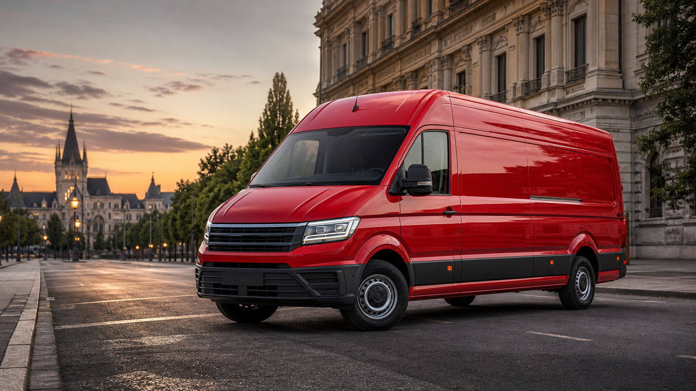

Mutari locale
Transport pentru apartamente, garsoniere, birouri mici sau spatii comerciale.

Transport local cu autoutilitara dedicata
Solutie premium pentru mutarea bunurilor, coletelor voluminoase si marfurilor care au nevoie de o autoutilitara incapatoare, curata si condusa responsabil.
Iasi, zona metropolitana si localitati apropiate, cu traseu stabilit in prealabil.
Se asigura exclusiv transportul. Beneficiarul organizeaza manipularea bunurilor.
Sambata si Duminica oricand, daca transportul este anuntat in prealabil.
Ce pot transporta
VW Crafter L4H3 este potrivit pentru transport de mobilier, electrocasnice, materiale, colete voluminoase, echipamente, marfa ambalata si obiecte care necesita o masina mai incapatoare decat o autoutilitara obisnuita.
Transport pentru apartamente, garsoniere, birouri mici sau spatii comerciale.
Ridicare si livrare bunuri mari, cu ora si traseu stabilite inainte.
Solutie eficienta pentru produse ambalate, materiale sau echipamente.
Transport in jurul Iasului, in functie de distanta si disponibilitate.
Vehicul
Un vehicul extra lung si extra inalt, ales pentru transporturi care cer volum mare, incarcare organizata si predictibilitate pe traseu.
Configuratia L4H3 ajuta atunci cand bunurile sunt lungi, inalte sau numeroase. Transportul se discuta inainte pentru a confirma ca obiectele se potrivesc.
Disponibilitate
Transporturile din timpul saptamanii se pot realiza seara, dupa program.
Disponibilitate flexibila in weekend, daca se anunta in prealabil.
Nu sunt disponibili oameni pentru incarcat si descarcat. Manipularea bunurilor revine clientului.
Contact
Pentru o estimare corecta, pregateste adresele, intervalul dorit, tipul bunurilor, numarul aproximativ de obiecte si daca exista conditii speciale de acces.
Adresa ridicare, adresa livrare, data, ora, dimensiuni aproximative si tipul bunurilor.